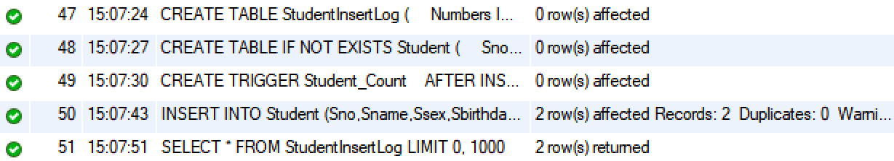
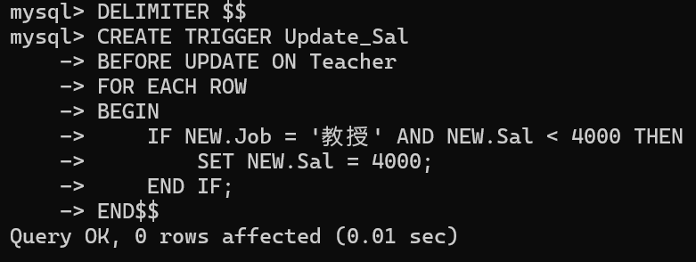
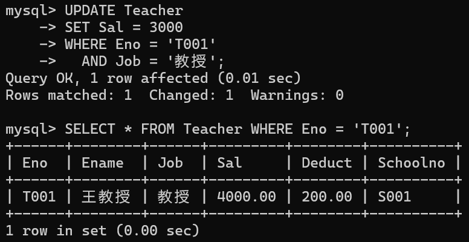
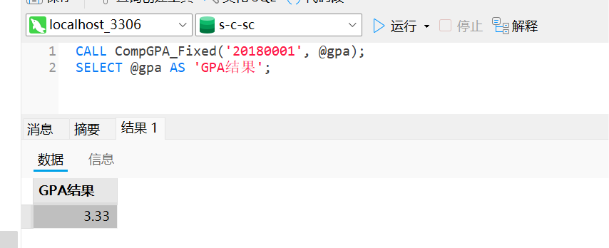

触发器与存储过程教材案例MySQL实现¶
作者：黄加慧,庄文博,徐艺榕
所用教材：王珊 杜小勇 陈红 高等教育出版社《数据库系统概论》
一、触发器¶
例5.18¶
[例5.18] 当对表SC的Grade属性进行修改时，若分数增加了10%，则将此次操作记录到另一个表 SC_U （Sno CHAR (8),Cno CHAR (5),Oldgrade SMALLINT,Newgrade SMALLINT）中。其中，Oldgrade是修改前的分数，Newgrade是修改后的分数。运行触发器之前需要创建SC_U表。
1. MySQL语句¶
/*运行触发器之前需要创建SC_U表*/
CREATE TABLE SC_U (
Sno CHAR(8),
Cno CHAR(5),
Oldgrade SMALLINT,
Newgrade SMALLINT
);
/*运行触发器*/
DELIMITER //
CREATE TRIGGER SC_T /*SC_T是触发器的名字*/
AFTER UPDATE ON SC /*UPDATE ON SC 是触发事件*/
/*AFTER是触发的时机，表示当时对SC的Grade属性修改完后再触发下面的规则*/
/*注意此处省略书中的REFERENCING子句，在MySQL中，直接使用OLD和NEW来引用旧值和新值，不需要REFERENCING子句*/
FOR EACH ROW
/*行级触发器，即每执行一次Grade的更新，下面的规则就执行一次*/
BEGIN
IF (NEW.Grade >= 1.1 * OLD.Grade) THEN
/*触发条件，只有该条件为真时才执行下面的insert操作*/ /*注意：书中是WHEN子句，而MySQL不支持WHEN在触发器定义中使用*/
INSERT INTO SC_U (Sno, Cno, OldGrade, NewGrade)
VALUES (OLD.Sno, OLD.Cno, OLD.Grade, NEW.Grade);
END IF;
END //
DELIMITER ;
/*测试触发器*/
UPDATE SC
SET Grade = Grade * 1.2
WHERE Sno = '20180001' AND Cno = '81001';
SELECT * FROM SC_U;
2. 运行示例¶
如下，显示触发器已经存在（即运行成功）。

测试触发器成功
测试两次，示例：Sno='20180001'，Cno='81001'

3. 注意事项¶
-
运行触发器之前需要创建SC_U表
-
省略书中的
REFERENCING子句，在MySQL中，直接使用OLD和NEW来引用旧值和新值，不需要REFERENCING子句 -
注意书中是WHEN子句，而MySQL不支持在触发器定义中使用
例5.19¶
[例5.19]将每次对表Student的插入操作所增加的学生个数记录到表Student Insert（numbers INT）中，运行触发器之前需要创建此表。
1. MySQL语句¶
/*创建StudentInsertLog表*/
CREATE TABLE StudentInsertLog (
Numbers INT,
InsertTime TIMESTAMP DEFAULT CURRENT_TIMESTAMP
);
/*创建测试中的Student表*/
CREATE TABLE IF NOT EXISTS Student (
Sno VARCHAR(10) PRIMARY KEY,
Sname VARCHAR(20) NOT NULL,
Ssex VARCHAR(2),
Sbirthdate DATE,
Smajor VARCHAR(20)
);
DELIMITER //
CREATE TRIGGER Student_Count
AFTER INSERT ON Student
/*指明触发器激活的时间是在执行INSERT后*/
/*注意：此处MySQL 不支持 REFERENCING NEW TABLE AS Delta*/
FOR EACH ROW
/*注意：FOR EACH STATEMENT 触发器在 MySQL 中不存在*/
/*逐行触发器，即执行完INSERT语句后*/
BEGIN
INSERT INTO StudentInsertLog (Numbers)
VALUES (1); /*每次插入1，表示新增1条记录*/
END//
DELIMITER ;
/*插入数据*/
INSERT INTO Student (Sno,Sname,Ssex,Sbirthdate,Smajor) VALUES
('20180001','李勇','男','2000-03-08','信息安全'),
('20180002','刘晨','男','1999-09-01','计算机科学与技术');
SELECT * FROM StudentInsertLog;
2. 运行示例¶
触发器实现与验证成功

实现结果：

3. 注意事项¶
- 此处MySQL不支持
REFERENCING NEW TABLE AS Delta FOR EACH STATEMENT在MySQL触发器中不支持，使用FOR EACH ROW行级触发器- 要注意插入数据应该在运行触发器之后进行，不然运行出来的表就是空表。
例5.20¶
[例5.20]定义一个BEFORE行级触发器，为教师表Teacher定义完整性规则：教授的工资不得低于4000元，如果低于4000元，自动改为4000元.
1. MySQL语句¶
说明：对于本题而言，应该创建两个BEFORE行级触发器，BEFORE INSERT和BEFORE UPDATE，即在插入和更新的时候都应该做工资检查。
为了演示方便，此处只创建了BEFORE UPDATE触发器。
CREATE TABLE School /*创建学院表*/
(SHno CHAR(8) PRIMARY KEY, /*SHno列为主码*/
SHname VARCHAR(40) UNIQUE, /*要求SHname值唯一*/
SHfounddate Date /*学院创建日期*/
);
CREATE TABLE Teacher /*创建Teacher表*/
(Eno CHAR(8) PRIMARY KEY, /*在列级定义主码*/
Ename VARCHAR(20),
Job CHAR(8),
Sal NUMERIC(7,2), /*每月工资*/
Deduct NUMERIC(7,2), /*每月扣除项*/
Schoolno CHAR(8), /*教师所在的学院编号*/
CONSTRAINT TeacherFKey FOREIGN KEY(Schoolno) REFERENCES School(SHno),
/*外码约束(命名为TeacherFKey)*/
CONSTRAINT C1 CHECK(Sal+Deduct>=3000) /*应发工资的约束条件C1*/
);
/*插入数据用于测试*/
INSERT INTO School (SHno, SHname, SHfounddate)
VALUES ('S001', '计算机学院', '2000-01-01');
INSERT INTO Teacher (Eno, Ename, Job, Sal, Deduct, Schoolno)
VALUES ('T001','王教授','教授',3000,200,'S001');
DELIMITER $$ /*更改默认分隔符,注意使用$$作为结束符*/
CREATE TRIGGER Update_Sal /*对教师表插入或更新时激活触发器*/
BEFORE UPDATE ON Teacher /*BEFORE触发事件*/
FOR EACH ROW /*这是行级触发器*/
BEGIN /*定义触发动作体,这是一个PL/SQL过程块*/
IF NEW.Job = '教授' AND NEW.Sal < 4000 THEN/*因为是行级触发器，可在过程体中*/
SET NEW.Sal = 4000; /*使用插入或更新操作后的新值*/
END IF;
END$$ /*触发动作体结束*/
DELIMITER ; /*恢复默认分隔符*/
/*查询验证*/
UPDATE Teacher
SET Sal = 3000
WHERE Eno = 'T001'
AND Job = '教授';
SELECT * FROM Teacher WHERE Eno = 'T001';
2. 运行示例¶
 
3. 注意事项¶
- 删除书中的REFERENCING语句，直接使用 NEW 关键字
- 当创建包含多个语句的触发器时，需要临时更改语句分隔符。
- 使用
SET NEW.column的赋值方式代替对象赋值 - 执行更新操作时必须满足两个条件：
- 如果 Job 不是'教授'，触发器不会生效
- 如果原工资已经 >=4000，触发器也不会生效
二、存储过程¶
例8.5¶
创建存储过程，计算学生平均学分绩点
1. MySQL语句¶
DELIMITER //
CREATE PROCEDURE `CompGPA`(
IN student_id CHAR(8),
OUT outGPA DECIMAL(3,2)
)
BEGIN
DECLARE totalGPA DECIMAL(10,2) DEFAULT 0;
DECLARE totalCredit INT DEFAULT 0;
DECLARE courseGPA DECIMAL(3,2);
DECLARE credit SMALLINT;
DECLARE grade SMALLINT;
DECLARE done INT DEFAULT FALSE;
-- 声明游标
DECLARE mycursor CURSOR FOR
SELECT c.Ccredit, sc.Grade
FROM sc
JOIN course c ON sc.Cno = c.Cno
WHERE sc.Sno = student_id AND sc.Grade IS NOT NULL;
-- 异常处理：读取完数据后置位 done
DECLARE CONTINUE HANDLER FOR NOT FOUND SET done = TRUE;
OPEN mycursor;
read_loop: LOOP
FETCH mycursor INTO credit, grade;
IF done THEN -- 检测是否读完
LEAVE read_loop;
END IF;
-- 计算GPA
IF grade BETWEEN 90 AND 100 THEN
SET courseGPA = 4.0;
ELSEIF grade BETWEEN 80 AND 89 THEN
SET courseGPA = 3.0;
ELSEIF grade BETWEEN 70 AND 79 THEN
SET courseGPA = 2.0;
ELSEIF grade BETWEEN 60 AND 69 THEN
SET courseGPA = 1.0;
ELSE
SET courseGPA = 0;
END IF;
SET totalGPA = totalGPA + courseGPA * credit;
SET totalCredit = totalCredit + credit;
END LOOP;
CLOSE mycursor;
-- 如果无有效成绩，返回0
IF totalCredit = 0 THEN
SET outGPA = 0;
ELSE
SET outGPA = totalGPA / totalCredit;
END IF;
END //
DELIMITER ;
2. 运行示例¶

3. 注意事项¶
需要注意变量的声明和添加异常处理，具体如下：
DECLARE语句¶
MySQL的DECLARE语句支持一次性定义多个变量。
DECLARE variable_name1, variable_name2, ..., variable_namen data_type [DEFAULT default_value];
- 同一DECLARE语句中的变量必须是相同的数据类型。
- 变量声明必须放在存储程序体的开头，在任何可执行语句之前。
- 每个变量可以有自己的DEFAULT值，但需要在单独的DECLARE语句中声明。
添加异常处理¶
- 当游标读取完所有数据后，再次执行
FETCH时会触发NOT FOUND条件。 - 若未声明异常处理，该条件会升级为错误 1329。
- 通过添加以下处理器，将错误转为标志位，便于正常退出循环：
DECLARE CONTINUE HANDLER FOR NOT FOUND SET done = TRUE;
实际效果演示（省略或删除该行后，调用阶段可能出现）：
1329 - No data - zero rows fetched, selected, or processed
结合上面的处理器，在循环中通过判定完成优雅退出：
IF done THEN
LEAVE read_loop;
END IF;
例8.6¶
查询学号 20180001 的学生的平均学分绩点GPA
1. MySQL语句¶
CALL CompGPA('20180001', @gpa);
SELECT @gpa AS GPA;
2. 运行示例¶
